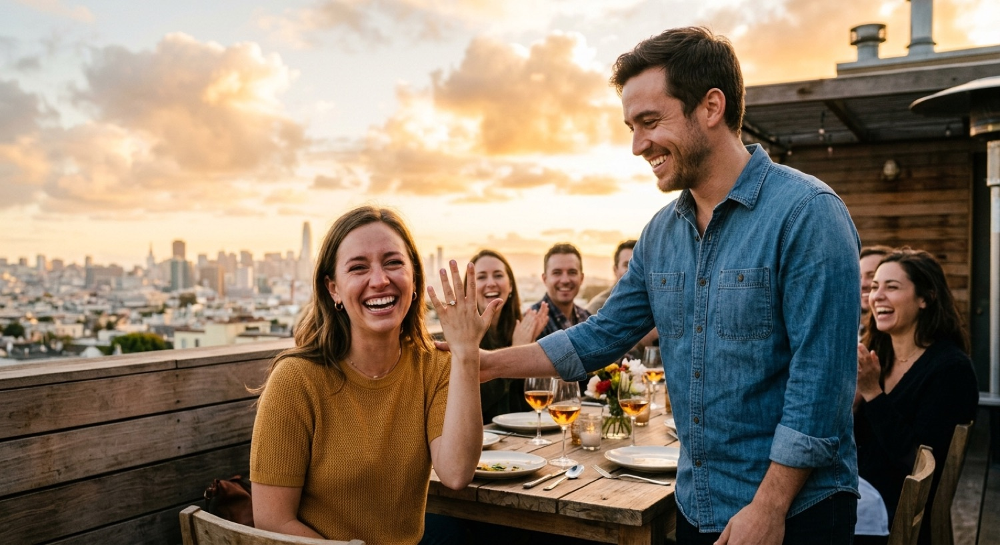
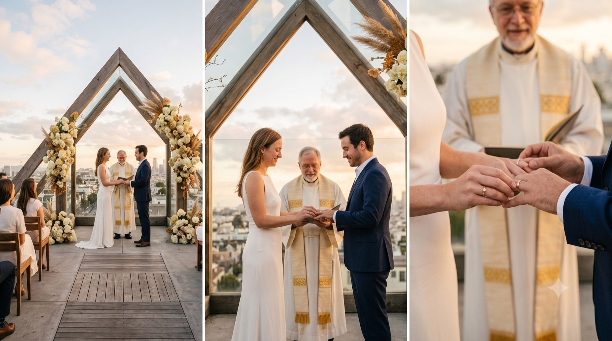
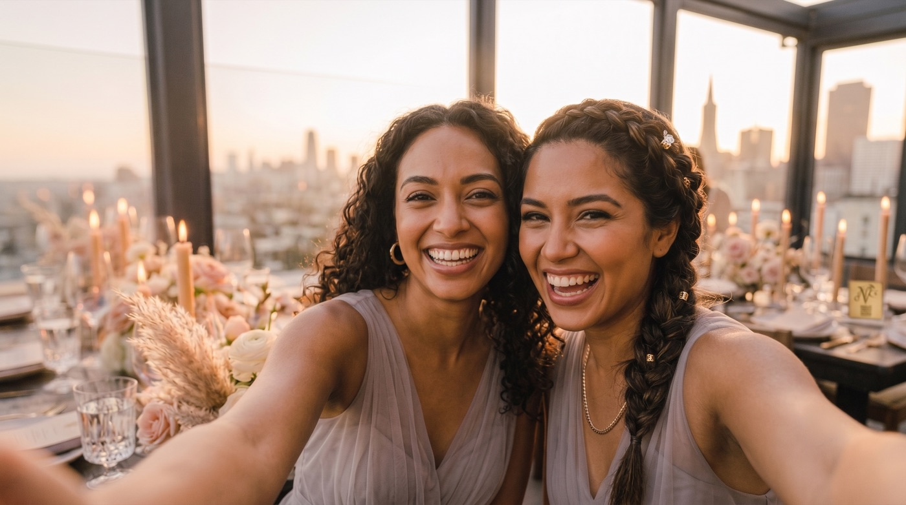
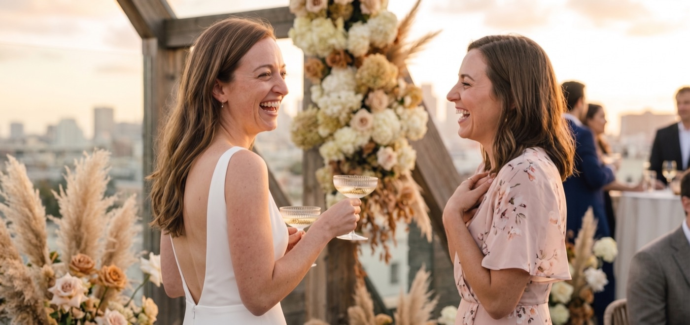
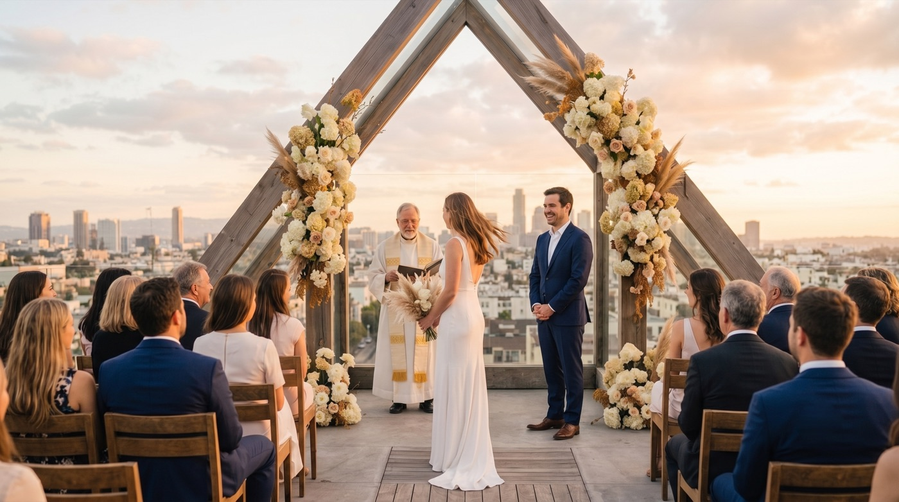
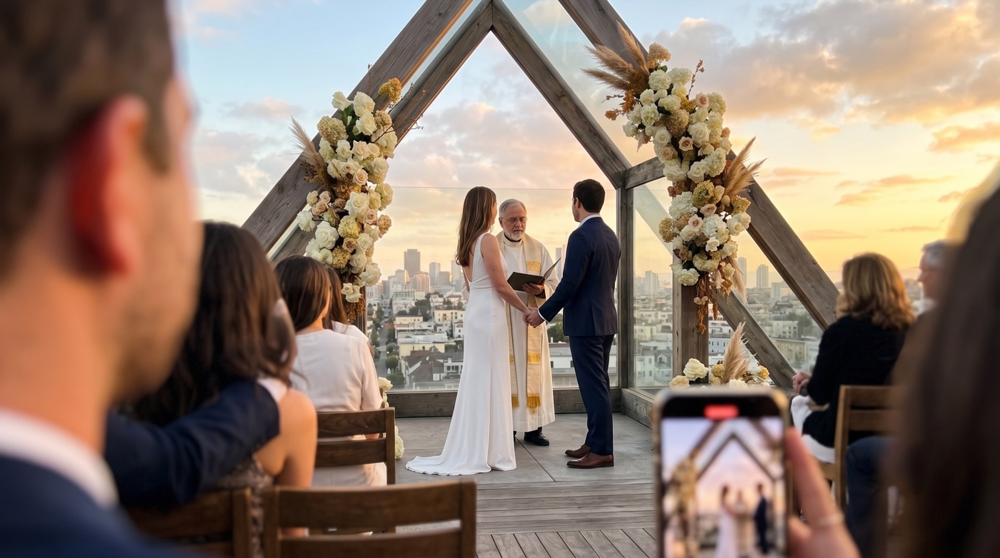
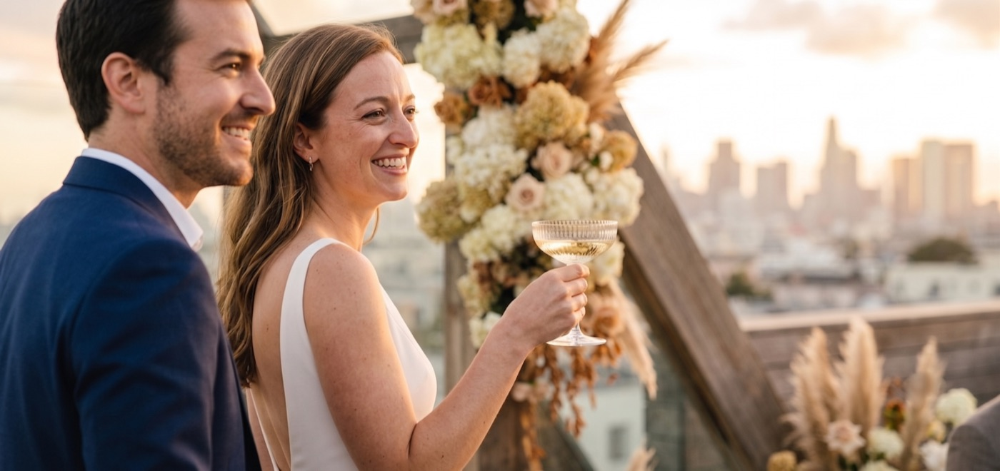

01 · Identidad
Una marca para su día
Monograma M&T, paleta y tipografía que viven igual en la papelería, la señalética del salón y lo digital.
 Lab
Lab
No querían “una boda más”. Querían que todo, del save the date al recuerdo final, se sintiera como una sola marca, y que sus invitados fueran parte de capturar la noche.
 La ceremonia
La ceremoniaUn solo mundo visual que funcionara igual en papel, en el celular de cada invitado y en la pantalla del salón, sin que nadie tuviera que descargar nada.
Monograma M&T, paleta y tipografía que viven igual en la papelería, la señalética del salón y lo digital.

La historia de la pareja, los detalles del evento, RSVP, ubicaciones y dress code, con scroll cinemático. La primera parada de cada invitado.
Una invitación en HTML para celular: se abre con un link, con toda la información y el RSVP integrado. Sin apps y sin PDF.
Abrir la invitación →
Un QR en cada mesa. Los invitados toman o suben fotos que van directo al Drive de los novios, y una pantalla en el salón las muestra entrando en vivo. Al final, el álbum completo queda para descargar.
Vista invitados → Pantalla del salón →





Una boda que se sintió como una marca de principio a fin, y un archivo vivo de la celebración, construido por sus propios invitados.